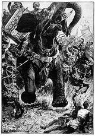

Ancient Greek traveller and ambassdor to India, Megasthenes, came across Saini clan in its glory days as the ruling tribe with its capital in Mathura.
Megasthenes described this tribe as Sourasenoi and their patron deity and ancestor as Herakles:
"..This Herakles is held in special honour by the Sourasenoi, an Indian tribe, who possess two large cities, Methora and Cleisobora" Arrian, Indika, viii, Methora is Mathura ; Growse (Mathura, 3rd ed. 279) suggests Cleisbora is Krisnhapura , ' city of Krishna'..."
-ANNALS AND ANTIQUITIES OF RAJASTHAN, James Tod, Vol. 1, pp 36, Oxford University Press, 1920
In this article we make a well- corroborated claim that Raja Porus was a Saini. We back up this claim with a solid textual theory developed by Colonel James Tod and accepted well within the academy. Dr. Pritam Saini, an eminent historian and literary critic of Punjab, a research fellow at Punjabi university , Patiala , a notable journalist and a life long member of prestigious academic bodies like Punjab History Conference and Indian History Congress, had concluded that Raja Porus was a Saini and was in the line of Maharaja Shoor Sen and Krishna-Balram Yadava warrior duo.
Those familiar with Dr. Pritam Saini's works would not need a reminder that he did not have the habit of being fast and loose with his academic opinions, especially to pander to any interest group's vanity. As such Dr. Pritam Saini's conclusion that Raja Porus was most likely a Saini carries a force which would be hard to resist for any serious scholar of Punjabi history, but here we are going to make an exception, and for the rest of this article we are going to completely ignore him and what he said on the subject.
As per the editorial policy of this journal, quoting and citing of academics from within the community is generally eschewed, lest an unfair accusation of conflict of interest be brought up by any paranoid detractor.
Instead we are going to examine James Tod's theory about Porus' lineal ancestry, a theory he developed with a very strong textual grounding in his monumental work Annals and Antiquities of Rajasthan.
Of claimants to the glory
A cursory search on the web would reveal a fierce competition among both Indian and Pakistani Punjabi groups to somehow prove any sort of link of their tribe to Porus. Such is the force of Porus's legend and glory as a warrior that even Pakistani Muslim groups , who generally are not very keen on linking themleves with their Hindu past, i.e 'jahaliya' as per the strict interpretation of Islam, now eagerly compete for any sort of connection with this quintessential Hindu kshatriya warrior whose bravery was even celebrated by his Greek opponents and told in all parts of the then known world . Most of these claims are based on analyses which are patently ludicrous - based purely on the similarity of the name Porus with a host of tribal and caste appellations- and can be dismissed out of hand. However, there are other groups who do have some substance in making this claim.
There were no known Hindu textual sources regarding Porus indicating the tribe or ethnic group he belonged to. Therefore any group claiming ancestry from him based on family or bardic records or tribal folktales is essentially narrating an apocryphal story invented only recently.
Indians rediscovered him vaguely through 'Shahnameh' of Firdaus, and then more concretely through the works of ancient Greek writers who became accessible to Indians only in 19th century in the colonial era. Thus the memory of Porus was lost to Indians for good 2200 years until the translated Greek classics brought to India by colonial scholars rekindled his warrior mystique in the Indian imagination.
Since then the subject of lineal descent from Porus as applied to modern day Indian ethnic groups has been as much a polemical topic among Indian and Pakistani groups as it has been an issue of bonafide academic curiosity among the scholars and aficionados of the Indian history. As such any student of history looking for an objective theory of history on this subject must necessarily sift painstakingly through influences and presentation biases going far beyond the academy. In Col. Tod's time, Sesodiyas of Mewar had laid claim to lineage from Porus, a claim which he dismissed based on whatever textual evidence that was available to him.
These claims have only multiplied with time. Generally speaking - and as already pointed out- these claims rest on the supposed similarity of the the name 'Porus' with the present day names these groups. No further need is felt to corroborate the claim with anything more substantive or at least with a theory of history that looks credible. All other extant facts and theories militating against the assertion are either not quoted or are just explained away through fuzzy footnotes. Sometimes even historians of note like Buddha Prakash and Kosambi seem to have been led astray by this red herring based on the similarity of names which might have been purely accidental or equally applicable to many other groups with competing claims. Their motivations on this issue remain unclear but it can be safely asserted that they have not attempted anything beyond a passing speculation on the issue, defintely not a formal theory with the depth of analysis found in Tod's work.
Tod , it seems, was fully alive to the pitfalls of Indic historiography- with its intertwining with the contemporary issues of identity- even in his time and the real secret his classic study of Rajput history, albeit limited only to present day Rajasthan, has endured its magic is because he was able to sift through a host of extraneous influences clouding the whole issue using a methodological approach still considered unassailable among the community of scholars.
Raja Porus as an ancient Saini warrior
Colonel James Tod had concluded that Porus was a Yadava or Yaduvanshi king and he further added that this conclusion was not based on any superficial similarity of names but based on a host of other available facts.
His view is worth a mention in this regard:
"To convince the reader I do not build upon nominal resemblance , when localities do not bear me out, he is requested to call to mind,that we have elsewhere assigned to Yadus of the Punjab the honour of furnishing the well known king named Porus; although the Puar, the usual pronunciation of Pramar, would afford a more ready solution."
-Annals and Antiquities of Rajasthan, pp 283, By James Tod, Edition: 2, Published by Asian Educational Services, 2001
Tod went on further to specifically point out Shoorsainis as the Puru tribe whose king was called Porus, the legendary Indian adversary of Alexander the Great:
“ Puru became the patronymic of this branch of the Lunar race. Of this Alexander's historians made Porus. The Suraseni of Methoras (descendants of the Soor Sen of Mathura) were all Purus, the Prasioi of Megasthenes... ”
- Annals and Antiquities of Rajast'han, James Tod, pp 36, Published by Higginbotham and co., 1873
This theory of Tod enjoys a general consensus in academc community. Dr. Ishwari Prasad, Dr. Pritam Saini et al and a number of other history scholars from Indian History Congress either have backed this theory in entirety or strongly indicated a link of his army with the Shoorsainis of Mathura, whence Sainis , Bhatis, Meos, Brar and Siniswar Jats,etc claim descent.
Krishna or Balaram as Indian Herakles and on the banner of Porus' Infantry
More than one scholar have opined that king Porus belonged to Shoorsaini tribe also based on the fact that his vanguard soldiers carried the image of Balarama (Herakles as per Greeks) on their banners. Balarama, Krishna's elder brother, was both the ancestor and patron deity of Shoorsainis. Col. Tod indicated that Indian Herakles could refer to both Krishna or his brother, although the image of Herakles with club in loin cloth, as described by Greek writers, corresponds more with that of Balaram:
"How invaluable such remnants of ancient race of Harikula! How refreshing to the mind yet to discover, amidst the ruins on the Yamuna, Hercules (Baldeva, god of strength) retaining his club and lion's hide, standing on his pedestal at Baldeo, and yet worshipped by Suraseni! This was name given to a large tract of country round Mathura, or rather round Surpura, the ancient capital founded by Surasena, the grandfather of the Indian brother-deities, Krishna and Baldeva, Apollo and Hercules. The title would apply to either ; though Baldeva has the attributes of 'god of strength'. Both are es (lords) of the race (kula) of Hari (Hari-kul-es), of which the Greeks might have made the compound Hercules. Might not a colony after the Great War have migrated westward?"
- Annals and Antiquities of Rajast'han, James Tod, pp 36, Published by Higginbotham and co., 1873
Here quoting the commentary of Edwin Bryant would not be out of context who identified Herakles with Krishna:
"According to Arrian, Diodorus, and Strabo, Megasthenes described an Indian tribe called Sourasenoi, who especially worshiped Herakles in their land, and this land had two cities, Methora and Kleisobora, and a navigable river, the Jobares. As was common iin the ancient period, the Greeks sometimes described foreign gods in terms of their own divinities, and there is is a little doubt that the Sourasenoi refers to the Shurasenas, a branch of the Yadu dynasty to which Krishna belonged; Herakles to Krishna, or Hari-Krishna: Mehtora to Mathura, where Krishna was born; Kleisobora to Krishnapura, meaning the "the city of Krishna"; and the Jobares to the Yamuna, the famous river in the Krishna story. Qunitus Curtius also mentions that when Alexander the Great confronted Porus, Porus's soldiers were carrying an image of Herakles in their vanguard."
-Krishna: a sourcebook, pp 5, Edwin Francis Bryant, Oxford University Press US, 2007
Indian History Congress reached the same consensus (see Proceedings, pp 72, Indian History Congress, Published 1957 ).
Balrama-Samkarshana and Vasudeva-Krishna as depicted on Indo-Greek Coinage Circa 180 BCE.
This numismatic evidence is from a period just 150 years after the year of Alexander's Indian invasiaon (Circa 326 BCE). Discerning reader is here called on to refer to Megesthenes' account in Indica about 'Indian Herakles bearing a club" depicted on Porus's battle standards. The correspondence between textual account and numismatic evidence is uncanny and unmistakable, giving further support to the view that Porus was a Shoorsaini Yadava warrior and an ancestor of Sainis of Punjab and closely related tribes of Bhatis, Tomars and Jadauns.
Shoorsainis as Prasioi of Megesthenes
A note needs to be made of the fact that when Col. Tod refers to descendants of Maharaja Shoorsen as 'Purus', he does not imply that they are the descendants of Puru, the younger brother of Yadu, whence Shoorsainis are descended.
He instead links the etymology of the word 'Porus' to 'Prasioi'. His statement about Porus being a descendant of Maharaja Shoorsen, needs to be looked closely again as follows:
“ Puru became the patronymic of this branch of the Lunar race. Of this Alexander's historians made Porus. The Suraseni of Methoras (descendants of the Soor Sen of Mathura) were all Purus, the Prasioi of Megasthenes... ”
The association of the word 'Porus' with Puranic 'Puru' who was the founder of a lineage of warrirors very closely related with Shoorsainis or Yadavas looks very natural and tempting but is entirely faulty one nonetheless. It has misled even distinguished historians like Buddha Prakash and Kosambi et al who have over looked the true meaning of the word 'Prasioi' and deduced it to mean 'Paurava' as descendant of 'Puru'.
Prasioi does not mean 'descendant of Puru'
There is an obvious problem with this interpretation of 'Prasioi' as the lineage of Puru was not known by his name even in the era of Mahabharata, nor was any ancient name of Punjab or area around it was known after him. In the line of Puru was born another illustrious king called Kuru. The area around Punjab was known as 'Kuru' after this great descendant of Puru. It is from the same Kuru both Kurukshetra and Kauravas of Mahabharata derived their name. In the same line was born another conqueror called Pandu, whence the legendary warrior clan of Pandavas whose descendants thenceforth carried on Puru's lineage in Pandu's name. The moot point is that the name 'Puru' or 'Paurava' had long ceased to be the patronymic of the descendants of Puru even in Mahabharata period , hundreds of years before the invasion of Alexander.
Prasioi means 'Prachaya' or the 'dweller of East'
"The Sanskrit word Prachyas (plur. of Prachaya, "easterner") denoted the inhabitants of the east country, that is, the country which lay to the east of the river Sarasvati, now Sursooty, which flows in a south-western direction from the mountains bounding the north-east part of the province of Delhi till it loses itself in the great desert. ... They are called by Strabo, Arrian , and Pliny 'Prasioi' "
-The Invasion of India by Alexander the Great as Described by Arrian, Q. Curtius, Diodorus, Plutarch and Justin by J. W. McCrindle
Col. Tod and other Indologists instead had translated the Greek word Parsioi as Greek version of Sanskrit 'Prachaya' , literally meaning the 'easterner', although some tension is palpable even in Tod's narrative in his attempt to resolve 'Prasioi' both with 'Puru' and 'Prachaya' but the latter meaning of the word is what drives his conclusion that the Porus was a Shoorsaini. When he says that Puru had become the patronymic of the descendants of Maharaja Shoorsen, he takes it to be derived from 'Prachayas' or 'easterners', not as derived from Puru, the brother of Yadu.
Chandragupta Maurya referred as Parsioi for the same reason
It is also noteworthy that Greekologists and Indologists also link Chandragupta Maurya with Prasioi, who ruled from Magadha, modern Bihar. This also does not render any strength to the view that Prasioi could mean the 'descendant of Puru' as Chandragupta was clearly not of this line.
Meaning of Porus as King of Easterners, or Prachayas, the migrants from East to Punjab and Afghanistan
The interpretation of 'Prasioi' as 'Prachaya' , which is an interpretation no historian of repute is able to disregard, also perfectly jives with the narratives of descendants of Shoorsen having migrated westward to Punjab and Afghanistan after Mahabharata war and the fact that Porus' army carried an effigy of Balarama or Krishna, the traditional deities of Shoorsainis who originated from Mathura. A migrant form eastern states is called "Poorvi" even to this date in Punjab.
To recapitulate all the points discussed so far, it did not surprise Col. Tod and other historians of repute who adopted his analysis to observe that:
1) Some of the descendants of Shoorsen , i.e. Shoorsainis had moved to Punjab after Mahabharata war;
2) The Shoorsainis were called 'Prasioi' or 'Prachaya', or 'Easterners' because they had migrated to Punjab from Mathura which is in the east of Punjab;
3) The etymology of 'Porus' is derived from 'Prasioi' or 'Pracahaya', or 'Easterner', not from 'Paurava', or the descendant of Puru.
4) The frontline soldiers of Porus carried an effigy of either Balarama or Krishna, i.e Indian Herakles, who were both ancestors and patron deities of Shoorsainis.
5) Megesthenes had clearly noted that Herakles was held in special regard by 'Sourasenoi' or Shoorsainis of Mathura when he had visited the place after in around 300 BC as the ambassdor of Seleukos Nikator.
All of the above facts lined up perfectly to support the conclusion that Porus was a Yadava, or Shoorsaini, the descendant of Maharaja Shoorsen of Mathura. When Col Tod makes the observation that Porus was a Shoorsaini , he has been through an arduous process of synthesizing epical references , local etymologies , traditional legends and situational issues with the accounts left by the Greek observers.
Time period of Greek emmisary Megesthenes
A doubt may be raised here that Megesthenes notes only areas around Mathura to be under the control of Shoorsainis when he had travelled through Mathura and the battle between Alexander and Porus is supposed to have taken place on the banks of Jhelum, far away from Mathura. This problem has an easy explanation. Megesthenes had travelled through Mathura in around 300 BC but the battle of Jhelum was fought in 326 BC. The Greek records indicate that Porus was assisinated around 320 BC and his kingdom in Punjab had gone in the hands of Chandragupta Maurya, with the 'Sourasenoi' or Shoorsainis having been relegated once again to Mathura, their traditional theo-political capital.

Shoorsaini Porus depicted on War Elephant
“ Puru became the patronymic of this branch of the Lunar race. Of this Alexander's historians made Porus. The Suraseni of Methoras (descendants of the Soor Sen of Mathura) were all Purus, the Prasioi of Megasthenes... ”
Annals and Antiquities of Rajast'han, James Tod, pp 36, Published by Higginbotham and co., 1873
Shoorsaini Warrior Raja Porus
'Parsioi' means 'Easterner', not 'Paurava', the descendant of Puru
""The Sanskrit word Prachyas (plur. of Prachaya, "easterner") denoted the inhabitants of the east country, that is, the country which lay to the east of the river Sarasvati, now Sursooty, which flows in a south-western direction from the mountains bounding the north-east part of the province of Delhi till it loses itself in the great desert... They are called by Strabo, Arrian , and Pliny 'Prasioi' "
The Invasion of India by Alexander the Great as Described by Arrian, Q. Curtius, Diodorus, Plutarch and Justin , pp 365, J. W. McCrindle
Ancient Saini king Porus
Kandadai Subrahmanya Vaidyanathan refers to Parsioi as ''Purvadesa '', i.e "Eastern Land".
The ancient geography of India: from original sources , pp 20, Kandadai Subrahmanya Vaidyanathan
Porus and Alexander -Battle of the Hydaspes
Shoorsaini Baldeva - Indian Herakles
Porus' vanguard soldiers carried his image. Indologists have identified him with the Herakles worhipped by the Sourasenoi, i.e., the Shoorsainis of Mathura.
"How invaluable such remnants of ancient race of Harikula! How refreshing to the mind yet to discover, amidst the ruins on the Yamuna, Hercules (Baldeva, god of strength) retaining his club and lion's hide, standing on his pedestal at Baldeo, and yet worshipped by Suraseni!
- Annals and Antiquities of Rajast'han, James Tod, pp 36, Published by Higginbotham and co., 1873
A Classical Painting of Visnu who is personified by warrior-duo Balaram and Krishna in Hindu sacred literature. Noteworthy is the "Tomara" or "Iron club" as one of the weapons of the deity. "Tomara-Dhara" is another scriptural reference to both Balaram and Krishna who are both incarnations of the identical deity. This symbolism is undoubtedly the origin of Yaduvanshi clan name of Tomaras.
When Megesthenes passed through Mathura in around 300 B.C. , he noted that Shoorsainis , identified by him as "Sourasenoi" , worshipped Herakles , a Greek deity corresponding with Balarama, or the " Lord of Strength".
Megesthenes' Herakles also carried a ""Tomara" .
A traditional depiction of Krishna's elder sibling ShoorsainiBaldeva who was on the banner of Porus' vanguard.
Shoorsainis as Worshippers of Baldeva, Indian Herakles
"..This Herakles is held in special honour by the Sourasenoi, an Indian tribe, who possess two large cities, Methora and Cleisobora" Arrian, Indika, viii, Methora is Mathura ; Growse (Mathura, 3rd ed. 279) suggests Cleisbora is Krisnhapura , ' city of Krishna'..."
ANNALS AND ANTIQUITIES OF RAJASTHAN, James Tod, Vol. 1, pp 36, Oxford University Press, 1920
Balaram (Baldeva), Indian Herakles, as Saini Yaduvanshi
"It is said about Balaram-Hercules that he came as a stranger to Greece from outside. (In my opinion he was Bhim of Harikula and Col. Tod also holds the same view). Yaduvanshis ruled here. 'Yehudi' is the distortion of 'Yadu'. In the land in which Saini Yaduvanshis settled, it was called 'Sinai'."
-Ghazni to Jaiselmer (Pre-medieval History of the Bhatis), pp 42 , Hari Singh Bhati, Publisher: Hari Singh Bhati, 1998, Printers: Sankhala Printers, Bikaner
A depiction of Tomara-Dhara Balarama or Baldeva , the Eldest of Shoorsainis
Link between Porus and Balarama, i.e Indian Herakles
"Qunitus Curtius also mentions that when Alexander the Great confronted Porus, Porus's soldiers were carrying an image of Herakles in their vanguard."
Krishna: a sourcebook, pp 5, Edwin Francis Bryant, Oxford University Press US, 2007


{kind=link}